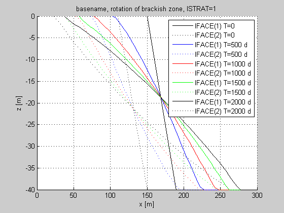

Script for SWI example 2
TO 091225
mf_setup; mf_analyze;
======= Start construction of your model ============
Your current HOME directory is
Z:\tolsthoorn On My Mac\GRWMODELS\MYWORK\SWIexamples\ex2
Running model construction script mf_adapt..
... mf_adapt finished, model has been constructed.
Saving data to <<swiex2.mat>>
save([basename,'.mat'],'IBOUND','STRTHD','xGr','yGr','zGr','Z','DELX','DELY','HK','VK','ISOURCE','ZETA','SSZ');
.... Saved !
Cleanup workspace ....... workspace cleaned and <<swiex2.mat>> reloaded.
Defining paths to your excecutables
Defining paths to your excecutables
Starting generation of input files ....
Preparing name file struct.
Basename current model is 'swiex2'
Getting nam file data from swiex2.xls
# MODFLOW etc. writeNAM 25-Dec-2009 22:19:44
Getting simulation parameters from worksheet MFLOW in swiex2.xls
Getting stress period data from worksheet PER in swiex2.xls
Getting layer info from worksheet LAY in swiex2.xls
Generating basic struct
# MODFLOW writeBAS6 25-Dec-2009 22:19:48
Generating discretization struct
Setting DELC=DELX
Setting DELR=DELY
# MODFLOW writeDIS 25-Dec-2009 22:19:48
Generating LPF struct and file
# MODFLOW writeLPF 25-Dec-2009 22:19:48
Generating OC struct and file
# MATLAB writeOC 25-Dec-2009 22:19:48
Generating PCG struct and file
# MATLAB writePCG 25-Dec-2009 22:19:49
Generating Salt Water Intrusion struct
# MATLAB writeSWI 25-Dec-2009 22:19:49
.... finished generation of input files, all files closed! Time= 25-Dec-2009 22:19:49!
Elapsed time is 6.478087 seconds.
MODFLOW-2000
U.S. GEOLOGICAL SURVEY MODULAR FINITE-DIFFERENCE GROUND-WATER FLOW MODEL
Version 1.15.00 08/06/2004
SWI PACKAGE 1.2
SEA WATER INTRUSION PACKAGE VERSION 1.2 15-Dec-2004
DEVELOPED BY
MARK BAKKER, UNIVERSITY OF GEORGIA
FRANS SCHAARS, ARTESIA WATER RESEARCH
FUNDING PROVIDED BY
GEORGIA COASTAL INCENTIVE GRANT PROGRAM
AMSTERDAM WATER SUPPLY
UZR PACKAGE 1.0
UNSATURATED ZONE RECHARGE PACKAGE VERSION 1.0 8-Sep-2005
DEVELOPED BY
FRANS SCHAARS, ARTESIA WATER RESEARCH
PIERRE KAMPS, AMSTERDAM WATER SUPPLY
FUNDING PROVIDED BY
AMSTERDAM WATER SUPPLY
Enter the name of the NAME FILE:
Using NAME file: mf2kswi.nam
Run start date and time (yyyy/mm/dd hh:mm:ss): 2009/12/25 22:19:49
Run end date and time (yyyy/mm/dd hh:mm:ss): 2009/12/25 22:20:12
Elapsed run time: 23.047 Seconds
Normal termination of MODFLOW-2000
Reading dat file swiex2.HDS, which contains the following information:
Number of stress periods: 1
Number of time steps : 1000
Number of layers : 1
Number of rows : 1
Number of columns : 60
iRec= 1 iR= 1 iPer= 1, iStp250, pertim= 500, totim= 500 Layers= 11
iRec= 2 iR= 2 iPer= 1, iStp500, pertim= 1000, totim= 1000 Layers= 11
iRec= 3 iR= 3 iPer= 1, iStp750, pertim= 1500, totim= 1500 Layers= 11
iRec= 4 iR= 4 iPer= 1, iStp1000, pertim= 2000, totim= 2000 Layers= 11
Trying to read swiex2.ZTA as BINARY file...worked!
Reading budget file swiex2.ZTA, which contains the following information:
The following 2 budget term labels were in the file:
ZETAPLANE1
ZETAPLANE2
Stress periods : 1
Time steps : 250 500 750 1000
Number of layers : 1
Number of rows : 1
Number of columns : 60
Label(iPer= 1,iTstp=250) =ZETAPLANE1
Label(iPer= 1,iTstp=250) =ZETAPLANE2
Label(iPer= 1,iTstp=500) =ZETAPLANE1
Label(iPer= 1,iTstp=500) =ZETAPLANE2
Label(iPer= 1,iTstp=750) =ZETAPLANE1
Label(iPer= 1,iTstp=750) =ZETAPLANE2
Label(iPer= 1,iTstp=1000) =ZETAPLANE1
Label(iPer= 1,iTstp=1000) =ZETAPLANE2
